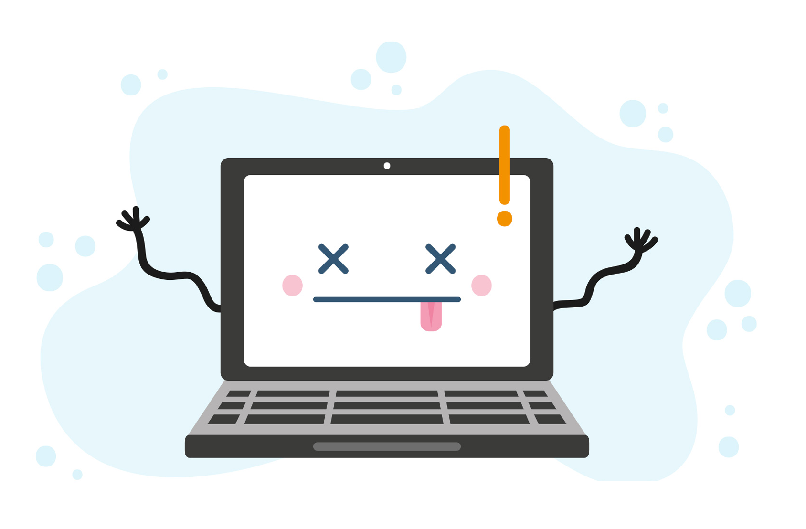

<div class="container center">
  <h2>404</h2>
  <h5 translate>{{ 'ups' | translate }}</h5>
  <h6 translate>{{ 'wrong' | translate }}</h6>
  <br>
  <a [routerLink]="''" class="waves-effect waves-light btn blue btn-large z-depth-2" translate>
    <i class="material-icons left">arrow_back</i>Go back to Homepage</a>
    
</div>
